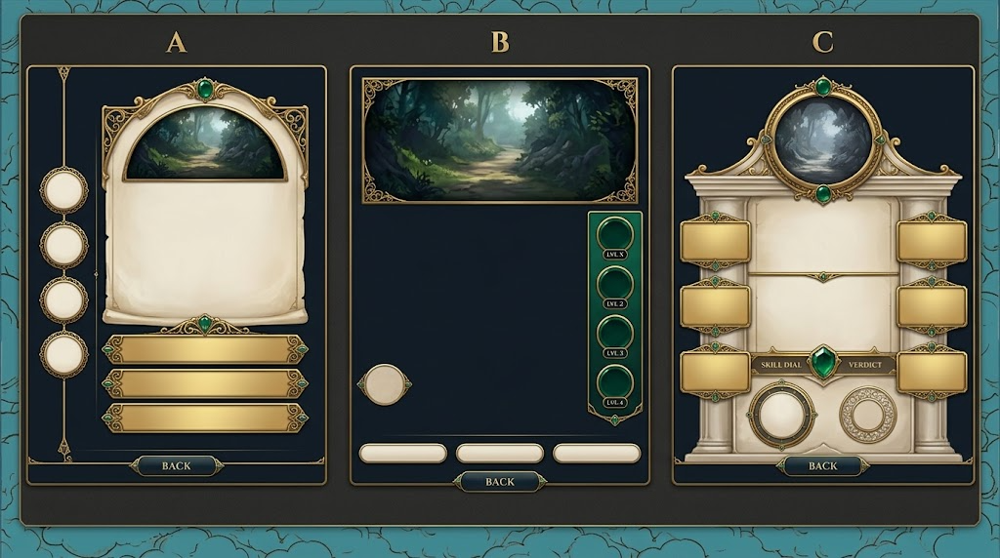
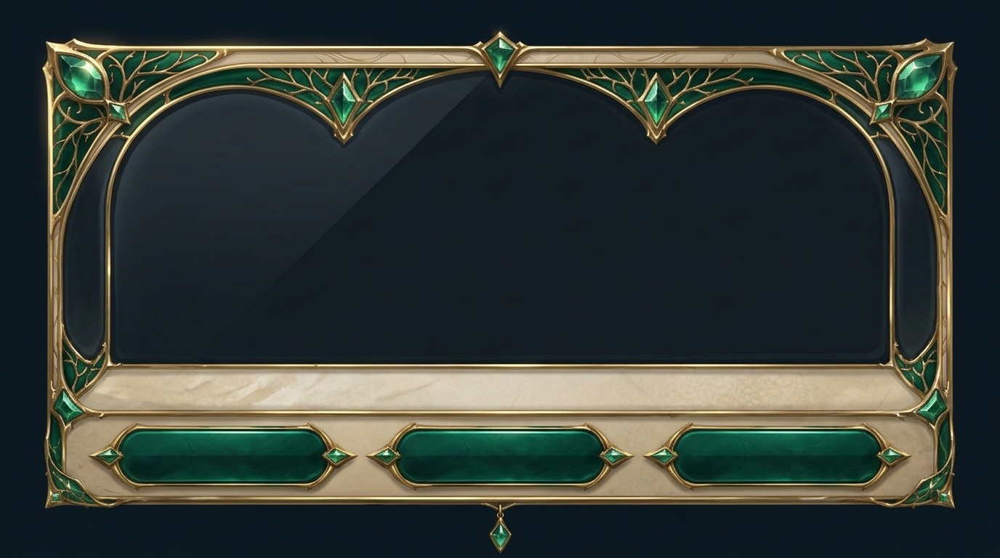
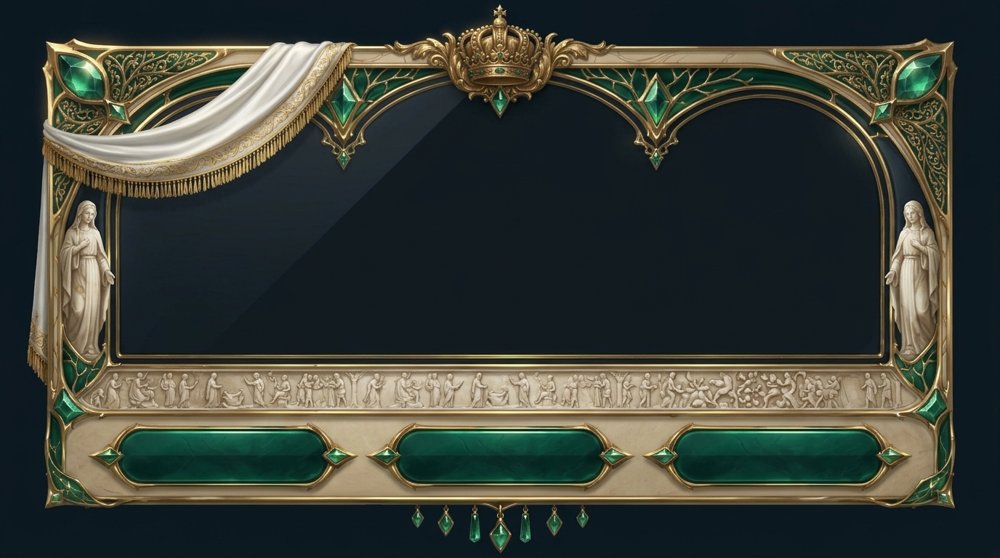
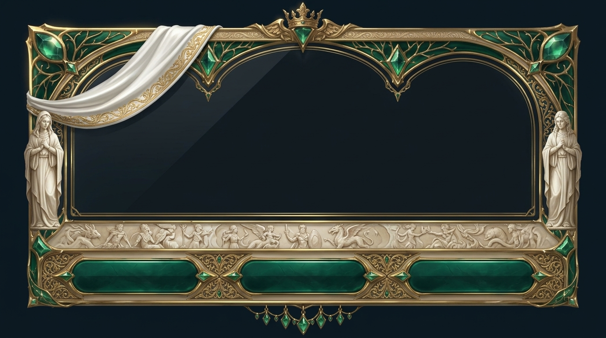
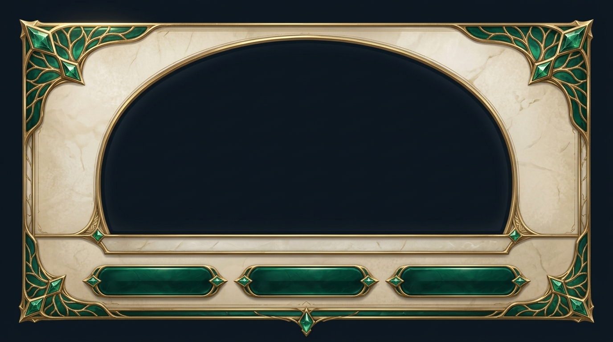
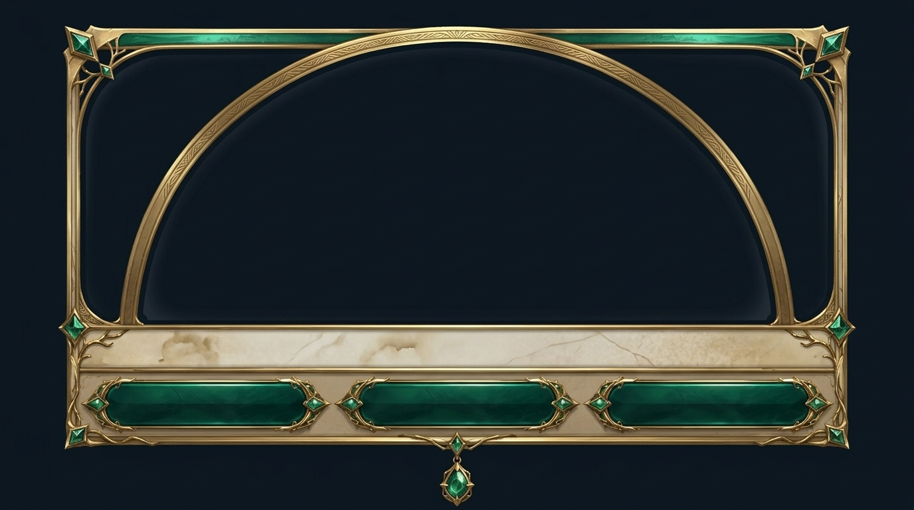

B1 — quest window (famiglia B, art-fork)
Budget 73→78/170. Le 3 prime erano la formula base; dopo la tua critica ("template, non abbastanza ricco") la passata opulenza alza statue/drappo/corona/fregio/gemme/pendenti. ← indice
Proposte AI (metodo nuovo — 3 layout liberi)
Gemini — tavola con 3 mockup: A rail roster appeso · B teatro dominante · C gabinetto architettonico (da prompt funzionale + catture, zero ornamento dettato)

Cornici generate in passata template (pre-metodo)
qwin-2 — baseline pre-critica
qwin-2 — la tua scelta precedente (doppio arco, vetro ampio)

Passata opulenza (sostituti candidati)
qwinr-1 — statue + drappo frangiato + corona grande + fregio a processione umana + 3 placche + pendenti

qwinr-2 — statue + drappo + corona snella + fregio a bestiari mitologici + divisori oro tra placche + pendenti

Altre varianti base (non scelte)
qwin-1 — teatro + fascia palco, campo alabastro

qwin-3 — arco unico, il più teatro-forward
